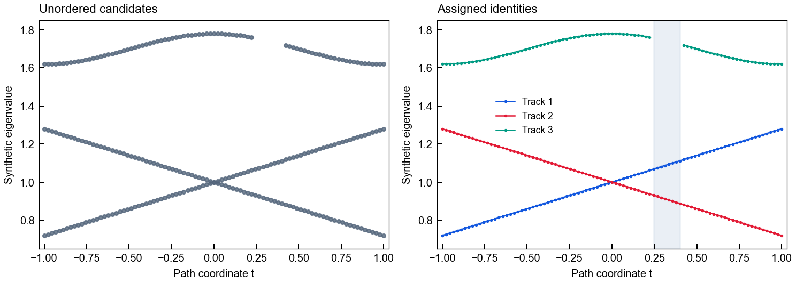
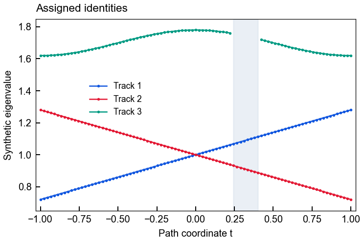
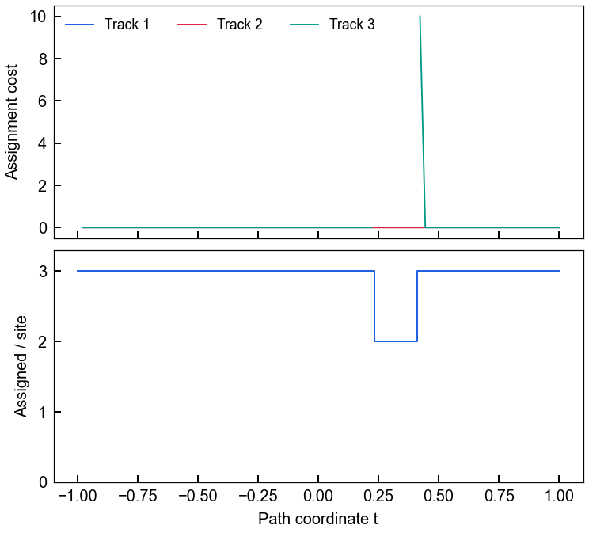
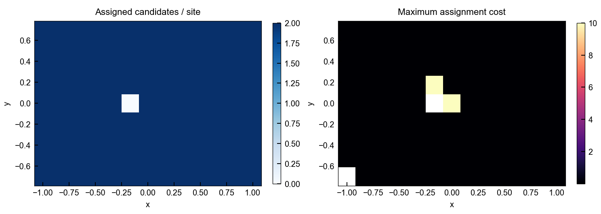

Computed synthetic examples · software demonstration · no experimental or full-wave evidence.
All coordinates and eigenvalues are dimensionless. Both path panels show exactly the same candidates. Colors denote computed track labels; shaded interval contains eight missing samples of the upper branch. Lines connect available samples only; no gap is filled. The graph uses a 13 × 9 non-square grid and one empty site.
Provenance and checks · Runnable source · README

Hungarian path tracking resolves the crossing using continuity; the missing upper-branch interval remains absent.
PNG · SVG
Candidate IDs are local opaque strings. All 265 observations survive assignment, with eight missing track slots.
PNG · SVG
Costs are numerical matching costs, not probabilities. Missing samples reduce coverage without inventing replacement values.
PNG · SVG
The empty site is retained; all other sites have two assignments. White in the cost map also includes the anchor, which has no incoming assignment cost. Reversing candidate order leaves identities unchanged.
PNG · SVG